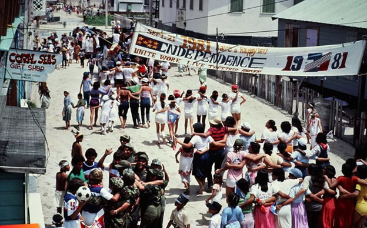
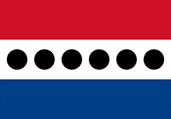

Historical Context
What Was Happening During the Era the Political Parties Were Formed?
The political landscape of Belize was deeply shaped by its colonial history and the push for independence. Both the People's United Party (PUP) and the United Democratic Party (UDP) emerged from a time of social and economic challenges. Let's break this down:
Colonial Legacy and the Fight for Independence
Before the formation of the political parties, Belize was a British colony known as British Honduras. The society was characterized by deep divisions based on race, class, and access to power. The majority of the population, mostly Afro-descendants and Mestizos, faced significant social and economic inequality under British colonial rule. The political system was largely controlled by a small elite—white settlers and colonial administrators—leaving the majority of Belizeans with little to no voice in the governance of their country.
The PUP was founded in the early 1950s by George Cadle Price, a man who would later be known as the Father of the Nation. Price and the PUP's founding members were part of a broader regional movement towards self-determination in the Caribbean and Latin America. This was a time when former British colonies were fighting for independence from European powers, with political movements spreading throughout the region, such as the rise of anti-colonial independence leaders like Errol Barrow in Barbados and Grantley Adams in the Caribbean.
The Rise of the People's United Party (PUP)
People's United Party (PUP)
The PUP, founded in 1950, became the political vehicle for the fight against colonialism. It was centered around George Price and a group of nationalists who aimed to give the people of Belize control over their own destiny. In 1961, George Price became the first Premier of British Honduras, and in 1964, he became the first Prime Minister of Belize when the country gained partial self-government.
At this time, the society of Belize was still struggling under colonial control. The majority of people lived in rural areas, with a large dependence on agriculture—mainly sugar, bananas, and citrus exports. The economy was weak, and many Belizeans faced poverty and limited access to education and healthcare.
Price's leadership was vital in pushing for political and social change. His ability to unite Belizeans around the cause of independence helped foster a sense of national identity and pride. Price's long tenure (he led the country for multiple terms, both before and after independence) laid the groundwork for many of the social programs that were meant to benefit the working class, such as increased access to education, land reforms, and social welfare programs.
How George Cadle Price Impacted Belize as the First Prime Minister / Father of the Nation
George Price is credited with being the Father of the Nation for his pivotal role in Belize's independence and early post-colonial development. He served as the country's first Prime Minister and held this office through most of Belize's formative years after independence in 1981.
Independence and Nationalism

George Cadle Price
Price's most significant achievement was leading Belize to independence from British colonial rule. After years of advocating for self-governance and autonomy, Belize officially became a fully independent nation on September 21, 1981.
He was the architect of the independence movement and emphasized a vision of Belize as a united, sovereign nation. His leadership made Belizeans feel proud of their own national identity, free from colonial influence.
Social Reforms and Development
Price pushed for social reforms that included land redistribution, better education, healthcare, and social welfare systems. He recognized the importance of improving the lives of ordinary citizens, especially in rural areas.
His policies aimed at poverty reduction and economic independence, which meant moving away from the colonial economic systems that prioritized exports over local needs.
Economic Challenges
While Price's reforms helped many people, the country's economy still faced challenges. Belize remained heavily dependent on a few agricultural exports, and the lack of diversification hindered long-term stability.
Price's administration was marked by international tensions as Belize struggled to secure its borders, particularly with Guatemala, which claimed part of Belizean territory. Price's diplomatic approach towards this issue, and his ability to keep Belize out of armed conflict, was a key part of his legacy.
Political Unity
As a leader, Price was known for his ability to unite Belizeans across racial and class lines in pursuit of a common goal. His legacy includes creating a more inclusive political system where both Afro-Belizeans and Mestizos had a say in the political process.
How Society Changed When UDP Took Over

United Democratic Party (UDP)
In 1984, the United Democratic Party (UDP) came into power, marking a significant shift in Belize's political landscape. This period was pivotal in changing the direction of the country, both economically and politically. Under Dean Barrow, the UDP emphasized a different approach, which had mixed effects on society:
Shift Toward Economic Growth
The UDP focused on privatization and free-market policies. Under their rule, Belize saw an influx of foreign investments, especially in tourism and real estate.
The government placed greater emphasis on developing economic infrastructure and attracting international capital. This resulted in a period of rapid urbanization, with Belize City and other urban centers seeing more development.
However, this economic focus also led to increased inequality. While the country's elites and foreign investors saw benefits, the working class and rural communities were left behind.
Privatization and Economic Policy
The UDP pursued privatization of public enterprises and austerity measures to deal with Belize's debt. These moves were seen as controversial because they weakened social safety nets that were previously strengthened under the PUP.
The government's emphasis on privatization and foreign capital didn't significantly benefit the poor. This created divisions between the urban rich and rural poor, leading to frustration among many Belizeans.
Political Rivalries and Societal Divisions
The switch from the PUP to the UDP led to a sharp division in society. While some hailed the economic growth brought by the UDP, others criticized the party for neglecting social welfare and deepening inequality.
Both political parties, PUP and UDP, became locked in a cycle of blame and partisan politics, often resulting in political gridlock and undermining national progress.
Rise of Crime and Corruption
The UDP government struggled with issues like crime, corruption, and poor governance, all of which undermined the social stability that Belize had experienced under the Price administration.
Belize saw an increase in crime rates, particularly in urban areas, and concerns over political corruption began to surface, leading to widespread disillusionment with both major political parties.
Conclusion
In summary, George Price's impact on Belize was profound—he led the country to independence and laid the foundation for the modern Belizean state. His tenure as the first Prime Minister shaped the nation's political, economic, and social policies, emphasizing nationalism, social reforms, and the integration of marginalized groups. However, with the UDP's rise to power, there was a shift towards market-driven economic policies that exacerbated inequality, leading to societal divisions. The political landscape of Belize remains marked by this ongoing tension between the PUP and UDP, as each party contends with the legacy of Price's vision for the country while also addressing the challenges of a modern nation-state.